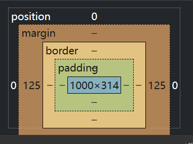

css基础
Table of Contents
前言
CSS 是层叠样式表，又叫级联样式表，后缀名为 .css ，用于是 html 中元素样式的定义
CSS 的主要作用是为了让网页具有美观一致的页面
导入到html
内联样式
要使用内联样式，需要在相关标签内使用 style 属性，其中的 style 属性可以包含任何 CSS 属性
但是缺乏整体性和规划性，不利于维护，维护成本高
|
|
内部样式
当单个文档需要特殊样式时，就应该使用内部样式表，可以使用 <style> 标签在文档头部定义内部样式表
这使得单个页面内的 CSS 代码具有统一性和维护性，便于维护，但是在多个页面之间容易混乱
外部样式
实际上是引入外部 css 文件作为不同网页的统一样式，可以实现通过改变一个文件来改变整体的样式，需要注意的是， link 标签在文档的头部才能引入，可以链接到样式表
|
|
语法
CSS 语法由两个主要部分构成，选择器以及一条或多条声明臭傻逼
- 选择器：通常是需要改变样式的
html元素 - 每条声明由一个属性和一个值组成
- 属性：是希望设置的样式属性
- 值：就是属性的值，属性和值被冒号分开
选择器
全局选择器
可以与任何元素匹配，优先级最低，一般做样式初始化
|
|
元素选择器
选择 html 文档中的元素，标签选择器，就是选择的是页面上的所有这种类型的标签，经常描述共性，无法描述某个元素的个性
所有的标签都可以是选择器，而且选择的所有这种类型的标签
|
|
类选择器
规定使用圆点来定义，针对希望的所有标签来使用，比较灵活，可以自己定义，优先级较高
|
|
同一个类选择器可以被多种标签使用，类名不能以数字开头，同一个标签可以使用多个类选择器，用空格隔开
|
|
ID选择器
针对某一个特定的标签来使用，只能使用一次，使用 # 来定义，需要注意的是，id 是唯一的，也就是一个标签只能有一个 id，并且不能是数字开头
|
|
|
|
合并选择器
用于提取共同样式，减少重复代码
语法： 选择器1,选择器2...{}
|
|
选择器的优先级
CSS 中权重用数字衡量
- 元素选择器：1
- class选择器：10
- id选择器：100
- 内联样式选择器：1000
优先级从高到低：内联样式选择器 > id选择器 > class选择器 > 元素选择器
字体属性
color字体颜色，有多种书写样式- 颜色名
red - 16进制表示
#ff0000 - rgb 表示rgb值
rgb()，其中每个参数的取值范围是0~255 - rgba 表示rgb值和透明度
rgba()，透明度的取值范围是0~1
- 颜色名
font-size字体大小font-weight字体宽度，设置文本的粗细bold定义粗体bolder定义更粗的字体lighter定义更细的字体100~900定义由细到粗的字体400为默认，700等同bold
font-style指定字体样式normal默认值italic斜体字
font-family指定一个元素的字体，多个字体之间通过逗号隔开，如果每个字体名称包含空格，必须加上引号
背景属性
background-color设置背景颜色，background-image设置背景图片，元素的背景是元素的总大小，包括填充和边界，默认情况下的background-image属性放在元素的左上角，如果图像不够大的话会在垂直方向和水平方向平铺图像，如果图像太大，超过元素大小，就显示图像左上角的部分background-position设置背景图片显示位置background-repeat设置背景图片如何填充repeat平铺repeat-xx 轴平铺repeat-yy 轴平铺no-repeat不平铺
background-size设置背景图片大小属性length设置背景图片的宽度和高度，第一个宽度，第二个高度，若只设置一个，另一个为 autopercentage计算相对位置区域的百分比，第一个宽度，第二个高度，只设置一个另一个为 autocover保持图片纵横比并将图片缩放成完全覆盖背景区域的最小大小contain保持图片横纵比并将图片缩放为合适背景定位区域的最大大小
background-position设置背景图片的起始位置，默认为0%0%left左center中right右top上center中bottom下x%y%其中0%0%为左上角
文本属性
text-align指定元素文本的对齐方式left文本居左排列，为默认值right文本居右center文本居中
text-decoration规定添加到文本的修饰，下划线，上划线，删除线等underline下划线overline上划线line-through删除线
text-transform控制文本的大小写captialize每个单词开头大写uppercase全部大写lowercase全部小写
text-indent定义文本块中首行文本缩进的多少
表格属性
border表格边框，有三个参数 线宽+线形+颜色border-collapse定义表格边框是否被折叠成一个单一的边框或者隔开width表格的宽度height表格的高度text-align设置表格文本对齐方式padding表格填充，设置表格中内容距离边框的距离，一般使用td和th元素的填充属性background-color背景颜色color文本颜色
关系选择器
分类
- 后代选择器：选择被元素E包含的所有F元素中间空格隔开
E F{} - 子代选择器：选择作为 E 元素的直接子元素 F ，中间用
>符号，E>F{} - 相邻兄弟选择器：选择紧跟在 E 元素之后的 F 元素，用加号表示，选择相邻的第一个兄弟元素，只能向下选择
E+F{} - 通用兄弟选择器：选择在元素 E 之后的所有 F 元素，作用于多个元素，用
~隔开E~F{}
盒子模型
所有的 html 元素可以看作是个盒子，在 css 中， box model 这一术语是在设计和布置时使用， css 盒模型本质上是一个盒子，封装周围的 html 元素，包括
margin外边距，清除边框外的区域，外边距是透明的，距离窗体左上角的距离，第一个参数是上下，第二个是左右，默认上下与左右一致border边框，围绕在内边距和内容外的边框，与表格的边框一致padding内边框，清除内容周围的区域，内边距是透明的，实际上就是把原来贴着左上角的元素的周边给扩大了，有两个参数，第一个是上下，第二个是左右，默认上下与左右一致content实际内容，盒子的内容，显示文本和图像

弹性盒子
是 CSS3 的一种新的布局方式，是一种当前页面需要适应不同的屏幕大小以及设备类型时，需要保证元素有恰当的布局方式，引入弹性盒布局模型的目的是提供一种更加有效的方式来对一个容器中的子元素进行排列，对齐和分配空白空间
由弹性容器和弹性子元素组成，弹性容器通过设置 display 属性值为 flex 将其定义为弹性容器，弹性容器内包含了一个或多个弹性子元素，弹性容器之外以及弹性元素之内都是正常渲染的，弹性容器只是定义了弹性子元素如何在弹性容器内布局
container属性
display为flex开启弹性盒，子元素默认水平排列flex-direction指定了弹性子元素在父容器中的位置row横向从左到右排列，左对齐，默认row-reverse横向从右到左排列，右对齐column纵向排列column-reverse纵向从后往前排列
justify-content内容对齐属性应用在弹性容器上，把弹性项沿着弹性容器的主轴对齐flex-start弹性项目向行头紧挨着填充，默认值，第一个弹性项的main-start外边距边线被放置在该行的main-start边线，而后续弹性项依次水平排列flex-end弹性项目向行尾紧挨着填充，第一个弹性项的main-end外边距边线被放置在该行的main-end的外边距边线上，后续弹性项依次水平摆放center弹性项目居中紧挨着填充，若剩余自由空间是负的，会在两侧溢出
align-items设置或检索弹性盒子元素在侧轴方向上的对齐flex-start弹性盒子元素的侧轴起始位置的边界紧靠该行侧轴的起始边界flex-end弹性盒子元素的侧轴结束位置的边界紧靠该行侧轴的结束边界center弹性盒子元素在该行的侧轴上居中放置，溢出也是两个方向
子元素属性
flex-grow根据弹性盒子所设置的扩展因子作为比率来分配剩余空间，默认为 0，也就是不会扩大，如果只有一个元素设置，那就按照扩展因子转化的百分比对其分配空间
文档流
文档流是文档中可显示对象在排列时所占用的空间，例如块元素时从上到下放置，内联元素从左到右放置，标准流中限制太多导致很多方法实现不了
高矮不齐，底边对齐
对于文本元素与图片元素的对齐，使用段落标签无法对齐，只能使用 <span> 标签
空白折叠现象
无论写多少个空格，换行。tab等符号，都会折叠为一个空格
元素无空隙
想要元素之间无空隙，必须两个元素在同一行，并且中间无空隙
脱离文档流
使一个元素脱离文档流有三种方式
- 浮动
- 绝对定位
- 固定定位
浮动
增加一个浮层来定位， float 属性定义元素在那个方向浮动，任何元素都可以浮动
left元素向左浮动right元素向右浮动
原理
- 浮动之后使得元素脱离了文档流
- 浮动只有左右浮动，没有上下浮动
- 脱离文档流之后，元素相当于在页面上增加一个浮层来放置内容，可以理解为有两层界面，在原页面之上又有一个浮动层
- 当所有元素浮动时，会变成水平摆放，向左或者向右
- 当容器元素不足以横向摆放内容时，会在下一行摆放
清除浮动
缺点
- 浮动元素造成父元素高度塌陷
- 后续元素也会受到影响
方法
- 父元素设置高度，撑开元素本身
- 受影响的元素增加
clear属性，清除影响 overflow清除浮动，在父级标签中加overflow:hidden，但是父级标签不能设置高度，针对父级塌陷- 伪对象方式：如果有父级塌陷并且同级元素也受到了影响，可以使用为对象，也就是为父级添加标签伪类，设置空的内容，并且使用
clear:both。并且这种情况下，父布局不能设置高度
定位
position 属性制定了元素的定位类型，一般来说如果出现了压盖的现象，那就是脱离了文档流
| 值 | 描述 |
|---|---|
| relative | 相对定位 |
| absolue | 绝对定位 |
| fixed | 固定定位 |
其中绝对定位和固定定位会脱离文档流，设置完定位方式之后，可以使用以下四个方向来进行调整位置
leftrighttopbottom
相对定位
就是相对于屏幕的位置之后再根据其它布局的位置进行改变
绝对位置
就是相对于窗口的位置，会导致某些布局的重合
固定位置
固定在某一个位置，有点像固定位置，但是脱离了文档流，会随着页面的滚动一直停留在那个位置
注意
设置定位之后，相对定位和绝对定位是相对于具有定位的父级元素进行位置调整，会逐层往上找，直到找到具有定位的父层元素，或者直到文章顶层
可以使用语句 margin: 0 auto 实现左右居中
Z-index
设置元素的堆叠顺序，更高堆叠顺序的元素总是会处于更低的堆叠顺序的元素前面
圆角
border-radius 圆角，给任何元素添加圆角，可以使用以下规则
- 四个值：左上+右上+右下+左下
- 三个值：左上+右上左下+右下
- 两个值：左上右下+右上左下
- 一个值：四个圆角相同
阴影
box-shadow向框内添加一个或者多个阴影text-shadow给文字添加阴影
|
|
其中
h-shadow水平阴影位置，必选，正为向下v-shadow垂直阴影位置，必选，正为向左blur阴影的模糊距离，给阴影添加一个模糊效果，可选color阴影的颜色，可选
动画
动画是元素从一种样式逐渐变化到另一种样式的效果，可以改变任意多的样式和任意多的次数，用百分比来规定变化发生的时间，或用 from 和 to 表示，等同于 0% 和 100% 。用 @keyframes 规则来创建动画
使用 animation 使用动画
|
|
name动画名称duration持续时间timing-function设置动画速率ease逐渐变慢（默认）linear匀速ease-in加速ease-out减速ease-in-out先加速后减速
delay设置动画开始时间（延时执行）iteration-count循环次数，infinite表示无限次direction播放的方向normal表示向前播放alternate动画在第偶数次向前播放，奇数次向后播放
animation-play-state动画播放的状态，running表示播放，paused表示停止
媒体查询
主要使得页面根据设备的大小，自动识别加载不同的样式
设置meta标签
使用设备的宽度作为视图宽度并且禁止初始的缩放，在 <head> 标签内加入这个 meta 标签
|
|
width=device-width宽度等于当前设备宽度initial-scale初始缩放比例，默认为 1maximum-scale允许用户缩放到的最大比例user-scalable用户是否可以手动缩放
精灵图
CSS Sprite 就是 CSS 精灵图，是一种网页图片的应用处理方式，允许将一个页面所涉及到的所有零星图片都包含到一张大图上去
优点
- 可以减少图片的字节
- 减少网页的
http请求，从而提高网页性能
原理
- 通过
background-image引入背景图片 - 通过
background-position将背景图片移到需要的地方
字体图标
可以使用字体图标来代替图片，以此来解决图片占用资源的问题
优点
- 轻量性：加载速度快，减少
http请求 - 灵活性：可以利用
css设置大小颜色等属性 - 兼容性：网页字体支持所有现代浏览器
使用字体图标
从阿里字体图标库下载字体图标，然后将其中除了 demo 的文件之外都移入项目中的 font 文件中，然后在 css 中使用。但是需要注意的是，给这个图标类设置字体图标大小会发现这个属性被覆盖掉了，所以可以再给它一个类名，然后给那个类名设置大小就可以了
旋转缩放拉伸倾斜
translate()根据 x 轴和 y 轴给定的参数，从当前元素位置移动rotate()绕 Z 轴旋转，负值表示逆时针rotateX()绕 X 轴旋转rotateY()绕 Y 轴旋转scale()该元素向着某个方向缩放的比例，第一个参数为 x 轴，第二个参数为 y 轴skew()包含两个参数值，分别表示X轴和Y轴倾斜的角度，如果第二个参数为空，则默认为0，参数为负表示向相反方向倾斜，从中有两个函数skewX()和skewY()表示在 X 轴和 Y 轴上的倾斜matrix()方法有六个参数，包含 z 轴旋转，缩放，平移和倾斜transform-origin设置旋转元素的基点属性
过渡属性
相当于是一种简单的动画
transition简写属性，用于在一个属性中设置四个过渡属性transition-property规定应用过渡的 CSS 属性的名称transition-duration定义过渡效果花费的时间。默认是 0transition-timing-function规定过渡效果的时间曲线。默认是easetransition-delay规定过渡效果何时开始。默认是 0